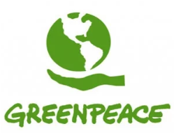
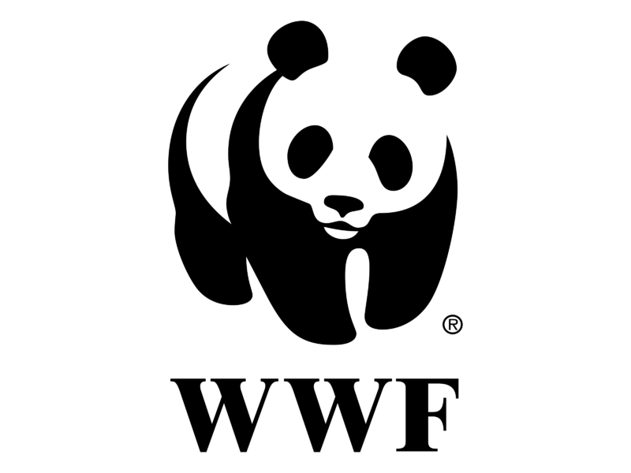

SOS-Kinderdorf

Unser Motto: Kindern Hoffnung und Zukunft geben Kindern ein sicheres Zuhause zu geben - das ist unsere Aufgabe. Als politisch sowie konfessionell unabhängiges Sozialwerk haben wir die Möglichkeit, die Welt ein bisschen besser zu machen. Der SOS-Kinderdorf e.V. ist einer der großen Fördervereine im weltweit tätigen Dachverband SOS-Kinderdorf International. Kinder brauchen Familie – das ist und bleibt das Kennzeichen der Arbeit des SOS-Kinderdorf e. V. Heute ist SOS-Kinderdorf in 135 Ländern tätig und hilft Kinder, Jugendliche und Familien in Not mit vielfältigen Angeboten.
Angebote des SOS-Kinderdorf:
Amnesty International

In vielen Ländern sind Menschen gefährdet, die sich für ihre Menschenrechte einsetzen. Vieles hat sich in den vergangenen Jahren zwar verbessert, aber immer wieder erleben wir, dass Regierungen und politische Gruppierungen die Menschenrechte massiv einschränken. Besonders gefährdet sind Menschen, die sich für ihre Rechte einsetzen, wie zum Beispiel Anwältinnen und Anwälte, Journalistinnen und Journalisten, Umweltaktivistinnen und Umweltaktivisten sowie andere kritische Stimmen.
Die Stärke von Amnesty International liegt im freiwilligen Engagement seiner zahlreichen Mitglieder, Unterstützerinnen und Unterstützer unterschiedlicher Nationalitäten, Kulturen und Altersgruppen. Sie sind miteinander verbunden, um lokal wie global ihre Ziele zu erreichen. Gemeinsam setzen sie Mut, Kraft und Fantasie ein für eine Welt ohne Menschenrechtsverletzungen. Unsere Aktionen werden möglich durch ein Netzwerk von Amnesty-Expertinnen und -Experten zu verschiedenen Ländern und unterschiedlichen Themen und ihre Kontakte zu Opfern von Menschenrechtsverletzungen und ihren Angehörigen, zu Ärztinnen und Ärzten, Anwältinnen und Anwälten, Journalistinnen und Journalisten – rund um den Globus.
Die Arbeit von Amnesty zeigt rund um die Welt Wirkung: Immer wieder erfahren wir, dass der Druck auf Regierungen und Behörden die Lage gewaltloser politischer Gefangener verbessert hat. Sie werden freigelassen, Todesurteile in Haftstrafen umgewandelt, Menschenrechtsverletzerinnen und -verletzer vor Gericht gestellt. Die Arbeit von Amnesty trägt außerdem dazu bei, dass Regierungen ihre Gesetze und Praktiken im Sinne der Menschenrechte ändern: Sie ächten Genitalverstümmelung und Morde im Namen der "Ehre“ und sprechen Frauen gleiche Rechte zu. Oder sie veranlassen Gesetze für eine bessere Kontrolle des Waffenhandels.
Greenpeace
Greenpeace wurde 1971 gegründet und hat heute über 40 Ländervertretungen. Mehr als drei Millionen Menschen unterstützen uns weltweit, davon rund 590.000 Fördermitglieder in Deutschland. Die erste deutsche Aktion von Greenpeace fand am 13. Oktober 1980 in der Wesermündung vor Nordenham statt. Aktivisten protestierten gegen die Dünnsäureverklappung durch das Verklappungsschiff "Kronos" der Firma "Kronos Titan" in die Nordsee.
GEWALTFREIE AKTIONEN GEGEN UMWELTVERBRECHEN: Greenpeace ist eine internationale Umweltorganisation, die mit direkten gewaltfreien Aktionen für den Schutz der natürlichen Lebensgrundlagen von Mensch und Natur und Gerechtigkeit für alle Lebewesen kämpft.
RECHTE UNSERER UMWELT VERTEIDIGEN: Für Natur und Umwelt gibt es nach wie vor keinen ausreichenden Rechtsschutz. Landschaftsverbrauch, nachhaltige Umweltbelastungen und kurzfristige Wirtschaftsinteressen haben häufig noch Vorrang. Dagegen gehen wir vor.
Unser Programm ist: Green & Peace = Greenpeace. Seitdem haben spektakuläre Aktionen Greenpeace weltweit bekannt gemacht. Die direkte Konfrontation mit Umweltsündern dient dazu, auf Missstände aufmerksam zu machen.
WWF
Der WWF leistet national und international in ausgewählten ökologischen Schlüsselregionen einen wirkungsvollen Beitrag zur Bewahrung der biologischen Vielfalt, Einzigartigkeit und Schönheit der Natur. In Deutschland setzen wir uns besonders für den Schutz von Nord und Ostsee, Küsten, Flusssystemen, Feuchtgebieten und Wäldern ein und wollen erreichen, dass bedrohte Arten wie Wolf, Luchs, Bär, Fischotter, Adler und Stör ihre Lebensräume ungestört besiedeln können und als Bewohner und Indikatoren einer intakten Natur geachtet werden.
Unsere Mission:Bewahrung der biologischen Vielfalt – ein lebendiger Planet für uns und unsere Kinder
Unsere Grundwerte: